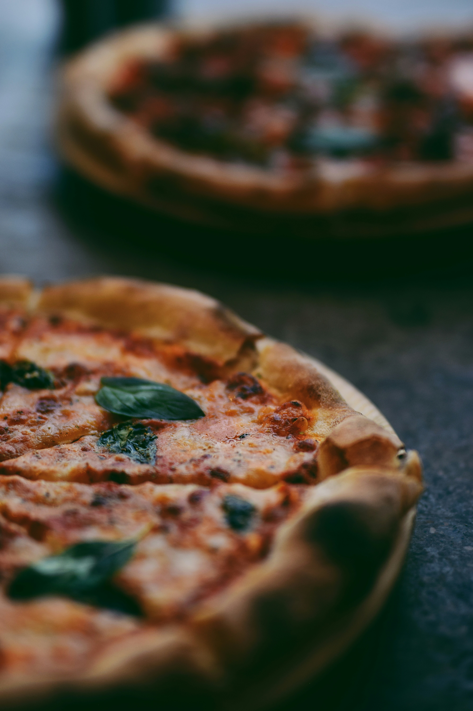

Steak
Steak is a juicy, tender cut of beef, typically grilled,
pan-seared, or broiled to perfection. Known for its rich,
savory flavor and mouthwatering aroma, steak is a
timeless favorite that can be seasoned simply with
salt and pepper or enhanced with marinades, herbs,
and sauces.

Pasta
Pasta is a beloved Italian staple made from durum
wheat and water, crafted into countless shapes and
sizes to suit any sauce or flavor.

Pizza
Pizza is a globally loved dish that starts with a
golden, crispy crust, layered with rich tomato sauce,
gooey melted cheese, and endless toppings—from
classic pepperoni to fresh veggies and gourmet
ingredients.